Project1998 · team review
The Buya and Koguryo palace interiors shipped disconnected — no
Warps.csv rows, because the RTK/CTK dumps never wired them. We recovered the
connectivity from passive live-retail walkthroughs (enter-map self-identification) and filled
the tiles from our own map geometry. But the live 7.x palaces are redesigned, so the exact
4.95 door order and several tile placements are best-guesses, and a number of rooms have no
.map terrain on our side at all.
Recovered from a live-retail walk. The live 7.x Buya palace was rebuilt — it shares the 46xx id space but added a whole Lobby/Treasury/Kitchen/Prison wing and renumbered rooms (live “Army Quarters” 4614 ≠ our “Imperial Army” 4615). We wired the 4.95 rooms era-faithfully from geometry, using the live walk only to confirm the courtyard’s room set.
Courtyard (4604) ├─ Tribunal Hall (4603) door order best-guess ├─ Imperial Ministry (4608) door order best-guess ├─ Throne Room (4606) ✓center ── Secret Garden (4613) 3 doors, top of throne ├─ Royal Court (4609) door order best-guess └─ Imperial Army (4615) ── Training Hall (4610) via army's top door
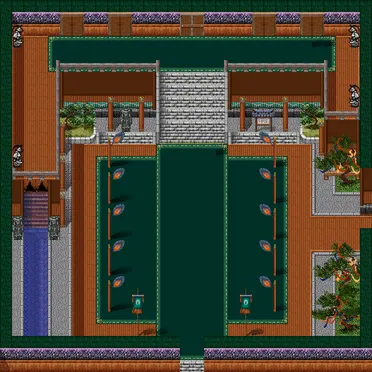
Courtyard — 5 north vestibule doors + an east opening (east opening likely led to the 7.x-only Eternity Garden; left unwired).
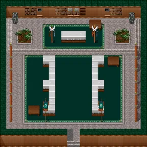
Tribunal Hall — courtyard door (order best-guess).
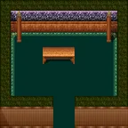
Imperial Ministry — courtyard door (best-guess); “restricted” room.
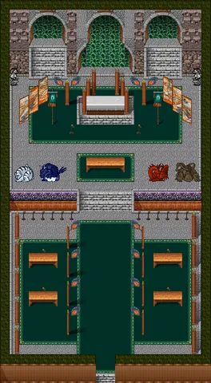
Throne Room — CONFIRMED behind the courtyard’s center/grand door; also connects up to the Secret Garden (3 doors).
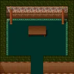
Royal Court — courtyard door (best-guess).
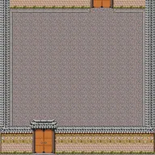
Imperial Army — courtyard door (best-guess); its top door → Training Hall.
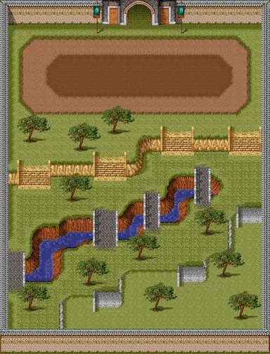
Training Hall — via Imperial Army’s top door. Two other north doors + an east opening still unwired.
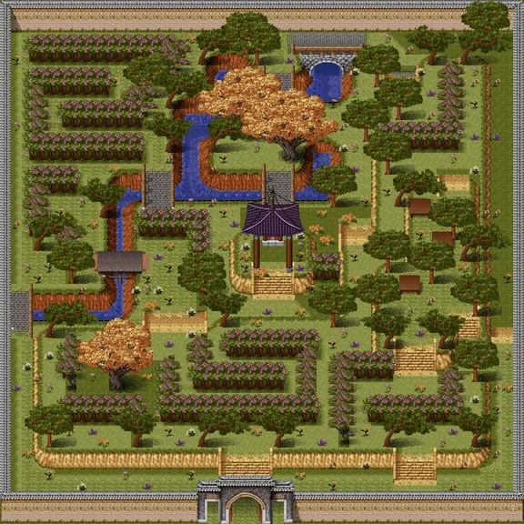
Secret Garden — 3 south doors → top of the Throne Room (left/center/right). Tile placement best-guess.
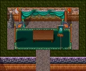
Lasahn’s Chambers — single exit, destination undetermined from geometry.
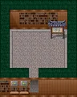
Imperial Promenade — single exit, destination undetermined.
General Quarters — no .map terrain in our registry.
Buya Devotion — no .map terrain.
Imperial Minister Office — no .map terrain.
Buyan Fairgrounds — no .map terrain.
Soldier’s Quarters — no .map terrain.
Officer’s Deck — no .map terrain.
Recovered from a live-retail walk. Unlike Buya, the Koguryo rooms self-identify to the same ids in our registry (names match) — but several are resized in 7.x (our Mezzanine is 14×15 vs the live 30×20 hub) and a big chunk of the palace (Victory Square, Jeongwon, Treasury, Kitchen, Dining, Army Quarters) has no .map terrain on our side, so those connections are known but unwireable.
Courtyard (4504) ├─ Throne Room (4506) ✓center ─┬─ Stairway (4514) ─┬─ Baths (4513) ✓ │ │ ├─ Kitchen (4529) ✗ no terrain │ │ └─ Dining (4530) ✗ no terrain │ └─ Treasury (4520) ✗ no terrain ├─ Royal Ministry (4509) ✓ ├─ Mezzanine (4505) ─┬─ Royal Court (4508) ✓ │ ├─ Victory Square (4518) ✗ no terrain │ └─ King MuHyul's Jeongwon (4519) ✗ no terrain └─ Army Quarters (4546) ✗ no terrain (→ KRA Training Area 4510? — unconfirmed) loose (terrain, connection unknown): Tribunal Hall (4503) KRA Training Area (4510)
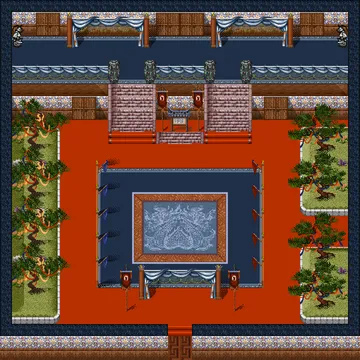
Courtyard — doors to Throne (center), Royal Ministry (top-right), Mezzanine (mid row); other doors locked or → Army Quarters (no terrain).
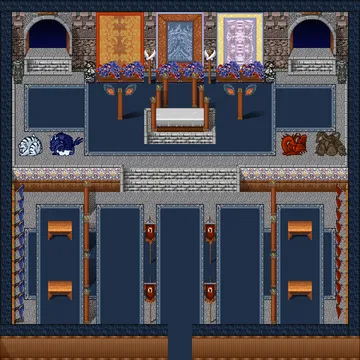
Throne Room — courtyard center door; top-left → Stairway, center-top → Treasury (no terrain).
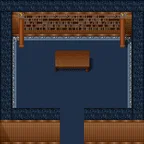
Royal Ministry — courtyard top-right door; “Ministry-members only”.
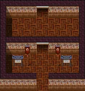
Royal Palace Mezzanine — courtyard mid door → mezzanine; mezzanine → Royal Court. RESIZED in 7.x into a hub; our 4.95 version is small (2 exits).
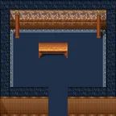
Royal Court — behind the Mezzanine.
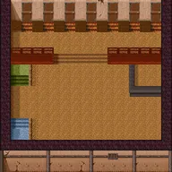
Royal Palace Stairway — 7-door hub behind the Throne; wired to Throne + Baths (best-guess tiles).
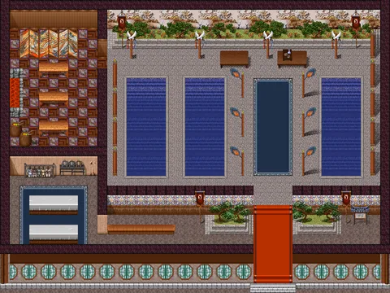
Kugnae Palace Baths — via the Stairway (best-guess).
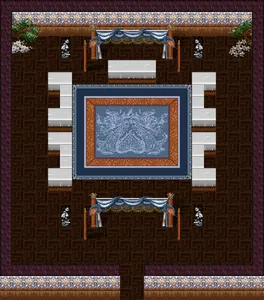
Koguryo Tribunal Hall — has terrain but was not reached on the live walk (courtyard door was locked?); connection unknown.
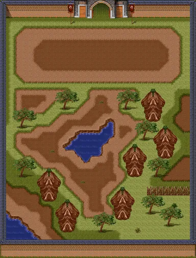
KRA Training Area — has terrain but not reached on the live walk; likely hangs off the Army Quarters (4546) the way Buya’s Training Hall hangs off Imperial Army, but 4546 is terrain-less so unconfirmed.
Army Quarters — live: bottom-right courtyard door → here (3 sub-doors, mostly locked). No .map terrain.
Victory Square — live: off the Mezzanine. No .map terrain (71×70 live).
King MuHyul’s Jeongwon — live: off the Mezzanine (upstairs). No .map terrain (100×100 live).
Koguryo Treasury — live: Throne center-top door. No .map terrain.
Royal Palace Kitchen — live: off the Stairway. No .map terrain.
Royal Dining Room — live: off the Stairway. No .map terrain.
Koguryo Palace Hall — no .map terrain.
Koguryo Royal Room — no .map terrain.
Koguryo Guest Room — no .map terrain.